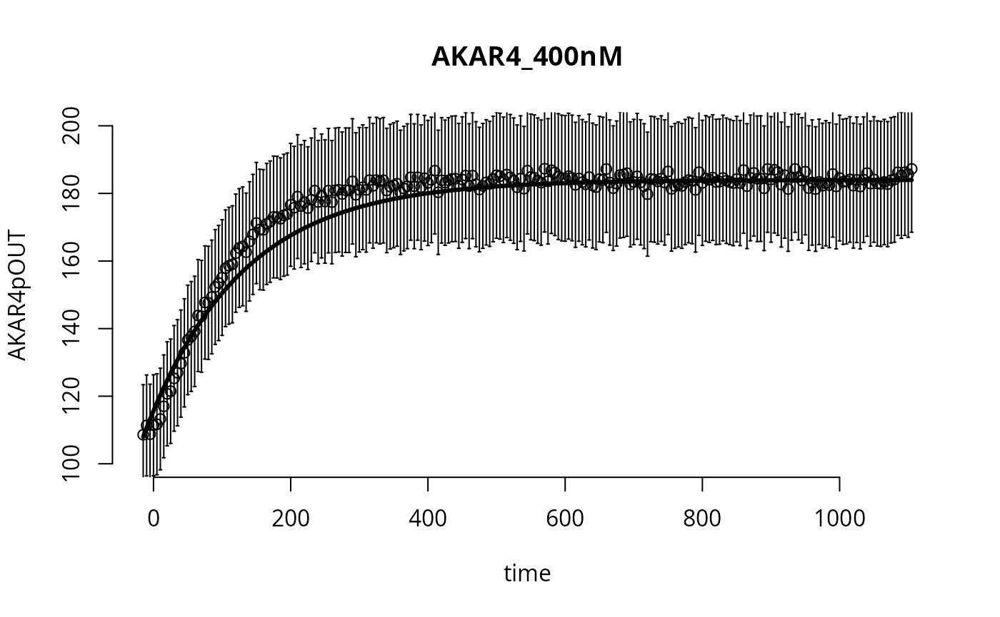
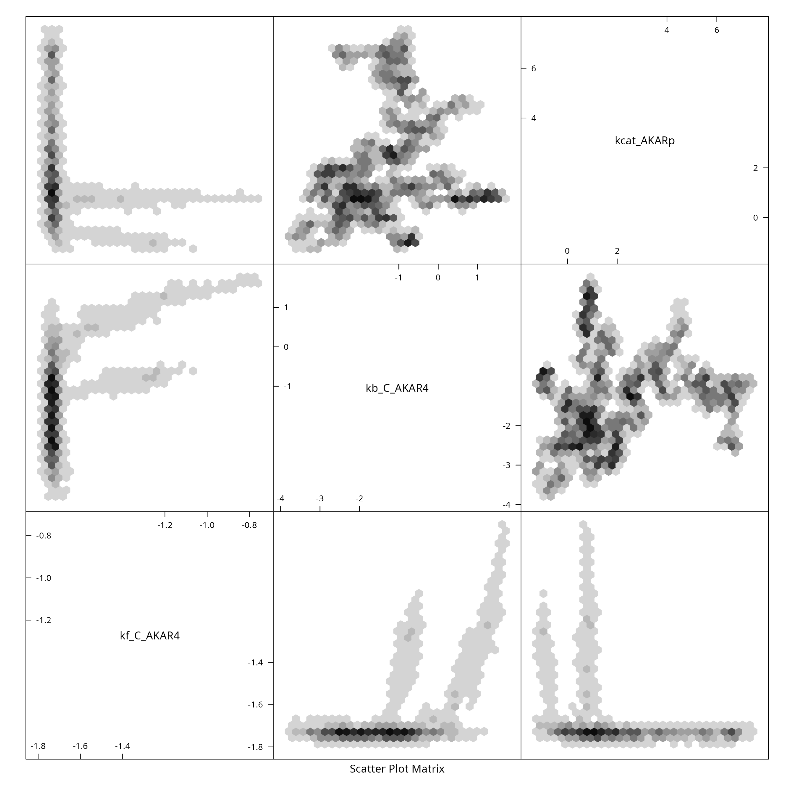
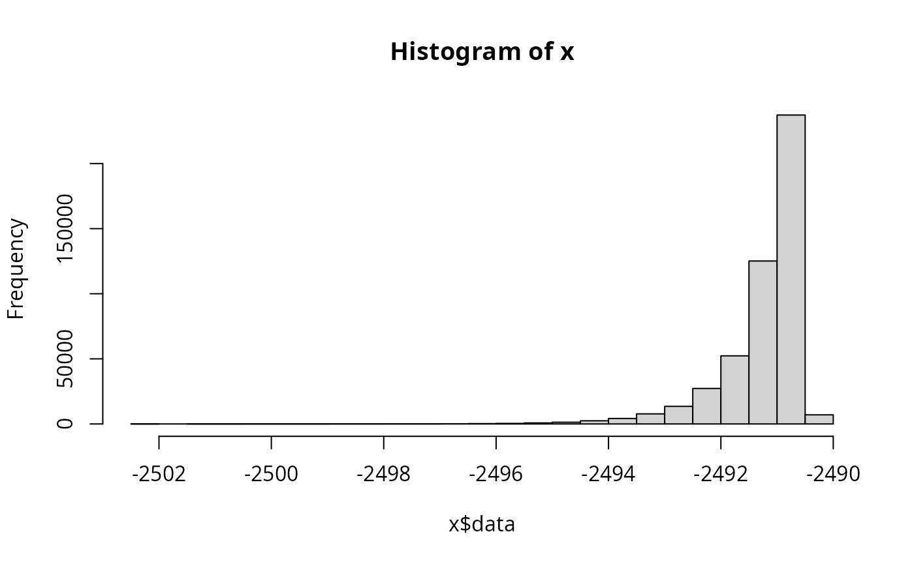
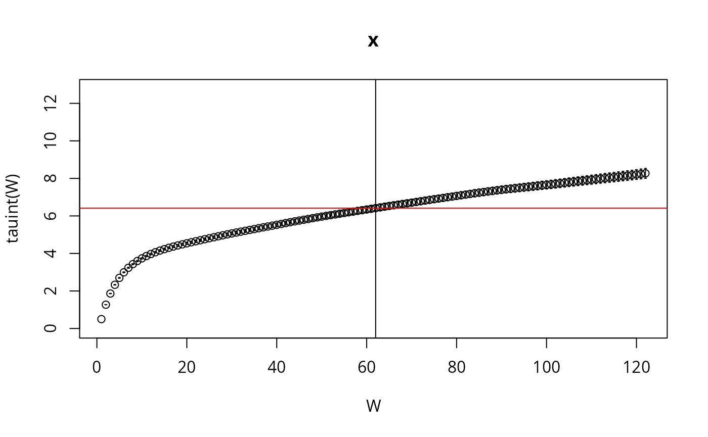
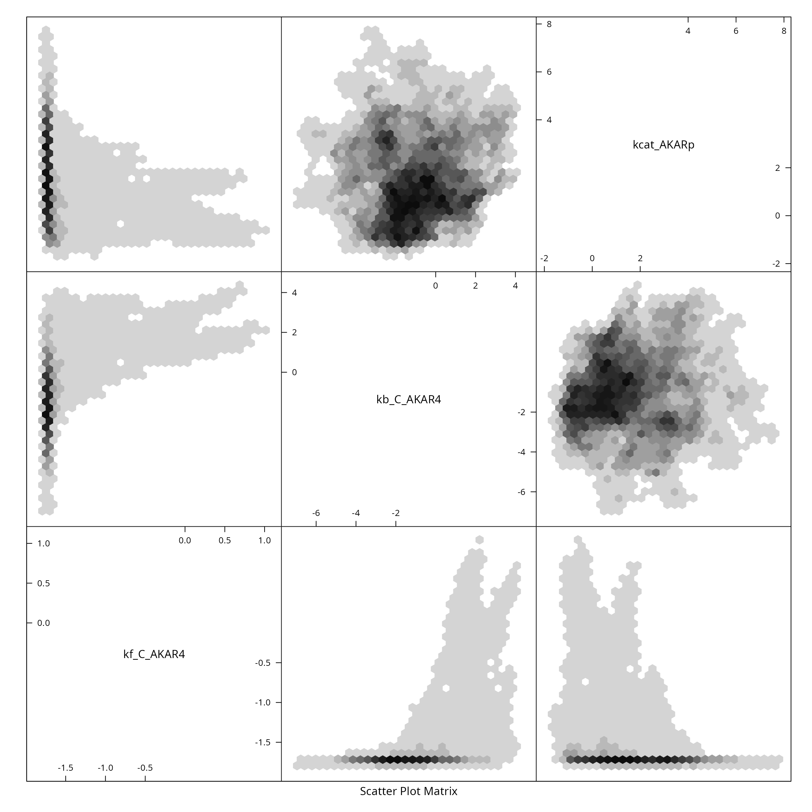

Uncertainty Quantification on AKAR4 (deterministic model)
sampleAKAR4.RmdLoad Model and Data
The first step is to locate and load the SBtab model files. In this
example we use the SBtab files from an already existing example
(“AKAR4”). (In the article “Build and simulate
your own Model you can read about how the set up your own SBtab
model. You can list the files in a directory with the dir()
command.)
f <- uqsa::uqsa_example("AKAR4")
sb <- SBtabVFGEN::sbtab_from_tsv(f)
#> [tsv] file[1] «AKAR4_100nM.tsv» belongs to Document «AKAR4»
#> I'll take this as the Model Name.
#> AKAR4_100nM.tsv AKAR4_25nM.tsv AKAR4_400nM.tsv AKAR4_Compound.tsv AKAR4_Experiments.tsv AKAR4_Output.tsv AKAR4_Parameter.tsv AKAR4_Reaction.tsvFrom the sb variable (list of data frames with the file
contents) we can create an ordinary differential equation, this will
print lots of text about how it interprets the contents (printouts are
omitted here):
m <- SBtabVFGEN::sbtab_to_vfgen(sb)We also load the experimental data:
ex <- SBtabVFGEN::sbtab.data(sb,m$conservationLaws)We have loaded these constructs:
print(names(sb))
#> [1] "AKAR4_100nM" "AKAR4_25nM" "AKAR4_400nM" "Compound" "Experiments"
#> [6] "Output" "Parameter" "Reaction"
print(names(ex))
#> [1] "AKAR4_400nM" "AKAR4_100nM" "AKAR4_25nM"
print(names(m))
#> [1] "par" "exp" "var" "vf"
#> [5] "func" "conservationLaws"Generate C ODE-code for model simulation
We next take m and generate c code from it, then write
this code into a file (AKAR4_gvf.c):
C <- uqsa::generateCode(m)
cat(C,sep="\n",file="./AKAR4_gvf.c")The ex variable holds the experimental data and
instructions about how they correspond to model simulations
(ex is a list).
Next, we check that the c sources exist in the specified location,
that the model compiles on the current system, with the default c
compiler (called by checkModel) and a shared library can be
built:
modelName <- checkModel("AKAR4",modelFile="./AKAR4_gvf.c")
#> building a shared library from c source, and using GSL odeiv2 as backend (pkg-config is used here).
#> cc -shared -fPIC `pkg-config --cflags gsl` -o './AKAR4.so' './AKAR4_gvf.c' `pkg-config --libs gsl`The function checkModel also appends the location of the
shared library as a comment to its return value.
For a test simulation we create the function s which
will remember the experiments to simulate and the model to simulate them
with. The function/closure s maps parameter vectors to
model solutions (trajectories):
s <- simcf(ex,modelName,parMap=log10ParMap) # or simulator.c
p <- log10(sb$Parameter[["!DefaultValue"]])
names(p) <- rownames(sb$Parameter)
y <- s(p) # here the simulation happensWe can plot the simulated output together with the experimental data and experimental error:
ylab <- colnames(ex[[1]]$outputValues)
d_ <- ex[[1]]$outputValues[[1]]
e_ <- ex[[1]]$errorValues[[1]]
t_ <- ex[[1]]$outputTimes
f_ <- y[[1]]$func[1,,1]
par(bty="n")
plot(t_,d_,type="p",main=names(ex)[1],xlab="time",ylab=ylab,ylim=c(100,200))
arrows(t_,d_,t_,d_+e_,angle=90,length=0.01)
arrows(t_,d_,t_,d_-e_,angle=90,length=0.01)
lines(t_,f_,lw=3)
Take a parameter Sample for this Model
We use just one core as this is a tiny model. No MPI, no parallel tempering. First we construct the prior:
sd <- rep(2,length(p))
dprior <- dNormalPrior(p,sd)
rprior <- rNormalPrior(p,sd)Next, we set up the loglikelihood function and the function
mcmcUpdate which will automatically determine that the
Metropolis Hastings Algorithm should be used with these inputs. Finally
we construct the function ‘MH_MCMC’ (below), which actually performs the
MCMC run, this takes the inital values, number of steps and the stepsize
as arguments.
llf <- logLikelihoodFunc(ex)
#> experiments contain 675 non-missing values
metropolis_hastings <- mcmcUpdate(s,ex,logLikelihood=llf,dprior=dprior)
MH_MCMC <- mcmc(metropolis_hastings)Finally, to obtain a sample of parameters:
x <- mcmcInit(
1.0,
parMCMC=p,
simulate=s,
logLikelihood=llf,
dprior=dprior)
h <- 5e-2
N <- 3e4
S <- MH_MCMC(x,N,eps=h)
colnames(S) <- names(p)
print(attr(S,"acceptanceRate"))
#> [1] 0.3267667
if (require(hexbin)){
hexplom(S)
} else {
pairs(S)
}
Better Sample
We can try to obtain a higher quality sample, through simple means:
- Combine several samples (replicas) into one big sample
- Use several random starting locations
- Remove burn-in phase from each chain
- Adjust the step size at least once to get close to 25% acceptance rate
A <- function(a) {
return(0.5 + a^4/(0.25^4 + a^4))
}
set.seed(137)
nCores <- parallel::detectCores()
bigSample <- parallel::mclapply(
seq(nCores),
\(i) {
x <- mcmcInit(
1.0,
parMCMC=t(rprior(1)),
simulate=s,
logLikelihood=llf,
dprior=dprior)
## adjust acceptance rate to 25% via step-size h
for (i in seq(30)){
z <- MH_MCMC(x,200,h)
x <- attr(z,"lastPoint")
h <- h*A(attr(z,"acceptanceRate"))
}
return(MH_MCMC(x,N,h))
},
mc.cores=nCores
)
S_ <- Reduce(\(a,b) {rbind(a,b)},bigSample,init=NULL)
L_ <- Reduce(\(a,b) {c(a,attr(b,"logLikelihood"))},bigSample,init=NULL)
colnames(S_) <- names(p)
if (require(hadron)){
ac <- hadron::uwerr(data=L_,nrep=rep(N,nCores),pl=TRUE)
tau <- ceiling(ac$tauint+ac$dtauint)
i <- seq(1,NROW(S_),by=tau)
} else {
i <- seq(1,NROW(S_),by=100)
plot(L_,type="l",xlab="mcmc index",ylab="log-likelihood")
}
#> Warning in arrows(c(2:Wmax), ti[2:Wmax] - dti[2:Wmax], c(2:Wmax), ti[2:Wmax] +
#> : zero-length arrow is of indeterminate angle and so skipped

The code above can of course also be done in a loop (sequentially),
and rbind within the loop.
Let us also plot the log-likelihood
plot(L_,main="Big Sample for AKAR4",xlab="Markov chain index",ylab="log-likelihood", type="l")This should be enough for this model size to be used as a basis for uncertainty quantification. For bigger models we turn to either more advanced MCMC algorithms, such as SMMALAor parallel tempering combined with the Metropolis-Hastings algorithm.